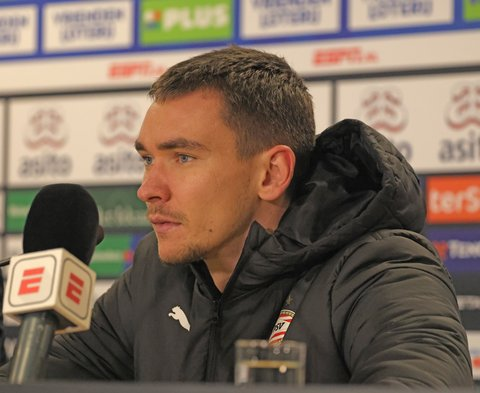
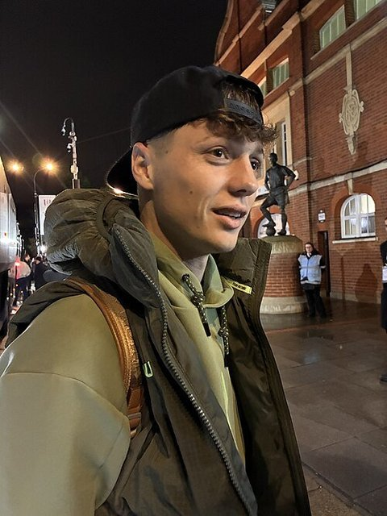

Summary · Question 8 of 14
National team and long run
The last pages cover the national-team squad, the Big-5 count over three decades and the two comparison countries.
League tier of the 2026 FIFA World Cup squad: Czechia and the peers at the tournament
35 % of Czechia’s 2026 FIFA World Cup squad (9 of 26) played in the 9 top-ranked leagues in 2025/26; the highest share among the 4 peers at the tournament is Switzerland’s 88 %.
- Top-9 %
- Stepping %
- Domestic %
- Other %
- VCVladimír Coufal
- LHLukáš Horníček
-

Matěj Kovář -

Ladislav Krejčí - RHRobin Hranáč
- TSTomáš Souček
- PSPatrik Schick
- PSPavel Šulc
- AHAdam Hložek
- VDVladimír Darida
- LCLukáš Červ
- LPLukáš Provod
- MSMichal Sadílek
- THTomáš Holeš
- TCTomáš Chorý
- SCŠtěpán Chaloupek
- DZDavid Zima
- JSJindřich Staněk
- JZJaroslav Zelený
- DVDenis Višinský
- JKJan Kuchta
- MCMojmír Chytil
- DDDavid Douděra
- DJDavid Jurásek
- ASAlexandr Sojka
- HSHugo Sochůrek
How the peers are sourced
- Top-9 %
- Stepping %
- Domestic %
- Other %
How to read it: one tile per squad player, tinted by the tier of the league where he played most minutes in 2025/26; the fold below compares the peers at the same tournament. Tier counts are administrative.
How we know
As an analytics question In numbers: league tier of every 2026 FIFA World Cup squad member's most-minutes 2025/26 row, matched by name and birth year, per country.
What we did We matched every named squad player to his club season and recorded which level of league he was actually playing in.
Sources Wikipedia squad lists (CC BY-SA 4.0, accessed 14 September 2026) matched to 2025/26 league rows on normalised name plus birth year; tier = league of the most-minutes row; squad players without a 2025/26 row, per country: CZE 0, SUI 0, CRO 3, AUT 2, NOR 4.
What this means
9 of the 26 players Czechia took to the 2026 FIFA World Cup played in a top-9 league. The share is a count over one squad, so one player moves it by about 4 percentage points, and the comparison covers only the 4 peers that reached the tournament, not the whole peer set.
What this does not show
Players who were not selected, how the squad played, and whether a player’s league tier reflects his own level or his club’s.
Data snapshot: FBref tables fetched 14 September 2026, snapshot commit ce793f3 · code: src/squad_lens.py · status: exploratory, not pre-registered · all limitations